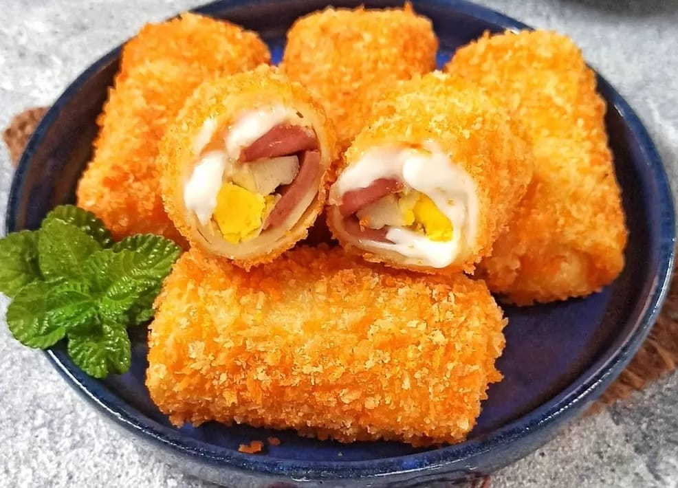

Kulit Lembut Anti Robek, Isian Melimpah Rasa Bintang Lima. Dijamin Bikin Ketagihan!
Lihat Semua Varian →
Kami tidak pelit! Setiap gigitan dipastikan mendapatkan isian yang melimpah, mulai dari ragout ayam hingga beef mayones.
Menggunakan resep otentik yang telah disempurnakan. Rasa gurih dan bumbu khas yang tidak akan Anda temukan di tempat lain.
Dibuat setiap hari berdasarkan pesanan (Pre-Order) dengan standar kebersihan tertinggi untuk menjaga kualitas rasa.